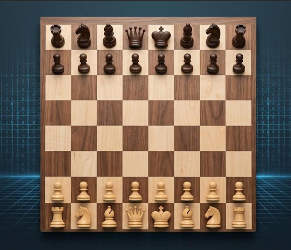
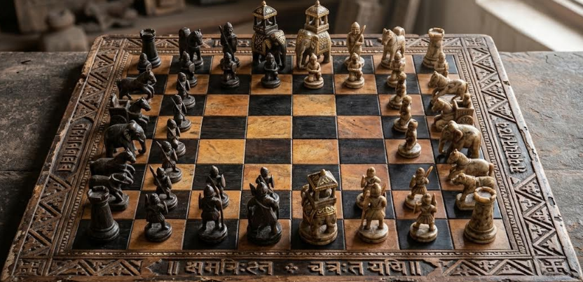

Chess, an ancient game developed in the 6th century CE in Northern India, began as Chaturanga. This precursor to modern chess represented the four divisions of the ancient Indian army: Infantry, Cavalry, Elephants, and Chariots. These evolved into the modern pieces we know as Pawns, Knights, Bishops, and Rooks.

From India to the World
Persia : From India, the game spread to Persia, where it became known as Shatranj.
Muslim World : When the Arabs conquered Persia, the game was taken up by the Muslim world.
Europe : Through the Moorish conquest of Spain, Chess was introduced to Southern Europe and later spread throughout the continent.
Evolution of the Game
- The game continued to evolve over centuries as it spread to different cultures.
- The modern rules and mechanics of chess were developed and adopted during its journey through the Middle East and Europe, eventually becoming the game played today.

Specific Cognitive Benefits
- Improved Memory : Chess requires players to remember openings, patterns, and the positions of pieces, which strengthens memory functions.
- Enhanced Critical Thinking : Players must analyze situations, consider potential outcomes, and plan several moves ahead, fostering critical and analytical skills.
- Increased Concentration : The intense focus needed to anticipate an opponent's strategy and respond accordingly improves attention span and focus.
- Boosted Creativity : Chess encourages players to think outside the box and envision various scenarios, which can translate to more creative problem-solving in other areas of life.
- Better Problem-Solving : The game is a unremitting exercise in problem-solving, as players constantly need to find solutions to tactical situations and strategic challenges.
- Reduced Risk of Cognitive Decline : Regular mental stimulation from activities like chess can help keep the brain active and engaged, potentially delaying age-related cognitive decline and the effects of dementia.
- Stimulated Brain Growth : Learning and playing chess helps grow dendrites, the neural connections that transmit signals in the brain, contributing to increased brain activity and function.
- ADHD : Studies have shown that regular chess playing can be an effective therapeutic tool for managing and reducing symptoms of Attention Deficit Hyperactivity Disorder (ADHD).
- Practice regularly : Consistent engagement with chess provides ongoing mental workouts, leading to more significant benefits.
- Seek out challenging games : Playing against others who require strategic thinking and focus helps to further challenge and reinforce your mind.